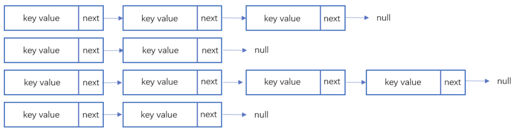
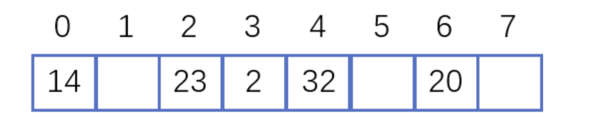

Hash表
什么是Hash
散列函数（英语：Hash function）又称散列算法、哈希函数，是一种从任何一种数据中创建小的数字“指纹”的方法。散列函数把消息或数据压缩成摘要，使得数据量变小，将数据的格式固定下来。该函数将数据打乱混合，重新创建一个叫做散列值（hash values，hash codes，hash sums，或hashes）的指纹。散列值通常用一个短的随机字母和数字组成的字符串来代表。[1]好的散列函数在输入域中很少出现散列冲突。在散列表和数据处理中，不抑制冲突来区别数据，会使得数据库记录更难找到。
维基百科
我的理解它是一种“标签”，可以将任意“毫无规律”的数据转义为长度固定的，格式固定的数据。
Hash表
理想的情况是希望不经过任何比较，一次存取便能得到所查记录，那就必须在记录的存储位置和它的关键字之间建立一个确定的对应关系 f,使每个关键字和结构中一个唯一的存储位置相对应。因而在查找时，只要根据这个对应关系f，找到给定值k 的像f(K）。若结构中存在关键宇和区相等的记录,则必定在f(K)的存储位置上，由此，不需要进行比较便可直接取得所查记录。在此,我们称这个对应关系子为哈希（Hash）函数，按这个思想建立的表为哈希表。
优缺点
优点其实很明显，就是它是根据key做Hash之后决定的存储位置，和数组对比，再读取某个value的时候，不需要遍历，可以直接再Hash，计算出地址，取出数据。在读取数据的时候将速度做好了极致。同时缺点也很明显，由于它的数据存储位置是通过Hash函数和key决定的,所以它是无序了，在对数据有顺序要求的情况下，缺点就暴露出来了。比如存日期，1号一定要在2号前面，但在实际的Hash表中，可能2号的内存地更靠前。
如何实现一个Hash表
1. Hash函数
第一步当然是构造一个Hash函数，其实一个好的（作用域广，碰撞少）哈希函数是非常困难的，当然这也不属于一个工科领域的问题，更偏向于理科（离散领域）。不过想要写一个简单的Hash函数还是很坚定的.
比如：
1) 直接地址法（取关键字或关键字的某个线性函数值作为地址）
H(key) = a * key + b
初中就学过的函数
比如有一个解放后出生人数的调查表。那我们的Hash函数完全可以是 H（key） = key + （-1948）
那key = 1949 ...,映射出的地址是1，2，3...，此种方法不会发生冲突，但这种方法的缺点就是对key有严格的要求，非常的不通用，所以实际也很少使用。
2）数字分析法:如果关键字由多位字符或者数字组成，就可以考虑抽取其中的 2 位或者多位作为该关键字对应的哈希地址，在取法上尽量选择变化较多的位，避免冲突发生。
例如表 2 中列举的是一部分关键字，每个关键字都是有 8 位十进制数组成：

表 2
通过分析关键字的构成，很明显可以看到关键字的第 1 位和第 2 位都是固定不变的，而第 3 位不是数字 3 就是 4，最后一位只可能取 2、7 和 5，只有中间的 4 位其取值近似随机，所以为了避免冲突，可以从 4 位中任意选取 2 位作为其哈希地址。
当然方法还有很多，比如 平方取中法，折叠法，除留余数法，随机数法，就不一一列举，实际的成熟的Hash算法，都比这要复杂很多。
2.Hash冲突
上面我们提到的Hash算法中，都不可避免的遇到一种情况，就是不同的Key但Hash之后的值相同。所以我们必须要处理这种冲突，主要有两种方式，在我之前的「由一个bug引发的对Swift中Hashable，Equatable原理的探究」中有将，我将它复制过来，在多讲一些。
链地址法：
链表地址法是使用一个链表数组，来存储相应数据，当hash遇到冲突的时候依次添加到链表的后面进行处理。

链地址在处理的流程如下：添加一个元素的时候，首先计算元素key的hash值，确定插入数组中的位置。如果当前位置下没有重复数据，则直接添加到当前位置。当遇到冲突的时候，添加到同一个Hash值的元素后面，行成一个链表。这个链表的特点是同一个链表上HashHash值相同。开放地址法：
开放地址法是指大小为 M 的数组保存 N 个键值对，其中 M > N。我们需要依靠数组中的空位解决碰撞冲突。基于这种策略的所有方法被统称为“开放地址”哈希表。线性探测法，就是比较常用的一种“开放地址”哈希表的一种实现方式。线性探测法的核心思想是当冲突发生时，顺序查看表中下一单元，直到找出一个空单元或查遍全表。简单来说就是：一旦发生冲突，就去寻找下 一个空的散列表地址，只要散列表足够大，空的散列地址总能找到。假设散列长为8，散列函数H(K)=K mod 7，给定的关键字序列为{32,14,23,2, 20}当使用链表法时，相应
的数据结构如下图所示：

当使用线性探测法时，相应的数据结果如下图所示：

这里的两种算法的区别是2这个元素，在链表法中还是在节点2的位置上，但是在线性探测法遇到冲突时会将冲突数据放到下一个空的位置下面。
对于两种方法的解释来自知乎的这个回答
线性探测法又分有好几种，上面说的是线性探测再散列，也就是d = 1，2，3，意思就是依次寻找下一个地址，还有二次探测再散列，d = 1²，-1²，2²，-2²，3²，-3²，其实就是在当前地址+ 1 -1 + 4 -4,目的就是其实在处理一个由于冲突引起的问题，我们叫它「二次聚集」，顾名思义，就是由于冲突发生的位置比较固定，次数又多，咱这个位置地址就会被填的很慢，也总会发生冲突，比如 一次冲突后，将数据填到了8的位置，那下一次Hash值“真的”是8的也会冲突。
当然还有再Hash法，就是遇到冲突的时候用另一个Hash函数，取求一个地址，存入。公共溢出区法等等。但Hash冲突是无法彻底解决的，一个冲突低的Hash算法是衡量它是否足够优秀的重要标准。
现代语言的
Hash算法为了通用，一般计算出的值都比较复杂，不能直接映射成地址，所以这中间还需要一个简单的算法去映射一下，比如取中间的某几个值，或者取余，都ok的
Hash表的查找
在Hash表上进行查找的过程和Hash造表的过程基本一致。给定 K值，根据造表时设定的Hash函数求得哈希地址，若表中此位置上没有记录,则在找不成功;否则比较关键字，若和给定值相等，则查找成功;否则根据造表时设定的处理沖突的方法找“下一地址”,直至Hash表中某个位置为“空”或者表中所填记录的关键字等于给定值时为止。
Hash表的扩容
Hash表的初次开辟的地址都是有限的，即便是用了链表法，那在冲突多了之后，Hash表的效率也会变低，基本和遍历数组区别不大了。所以在在存储到了一定程度后，就需要扩容。那什么时候需要扩容，由负载因子决定，一般是0.75，比如在100个连续的地址，当有75个存有数据后，就需要进行扩容，目的是降低冲突，提高效率。扩容时，需要将原来的数据再用新的Hash函数在映射一次，使其“均匀”的存入扩容后的地址空间中。